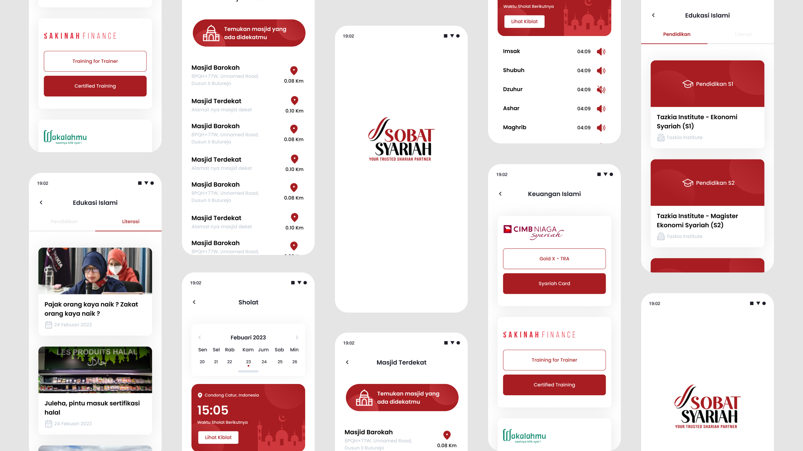

Sobat Syariah – Islamic Lifestyle Super App

Ringkasan Project
Sobat Syariah adalah super app Islamic lifestyle yang dirancang untuk memudahkan umat muslim menjalani kehidupan sesuai syariat dalam satu platform. Aplikasi ini mencakup 11 fitur utama — mulai dari ibadah harian, keuangan syariah, edukasi islami, hingga direktori produk dan destinasi halal.
Dalam project ini saya merancang keseluruhan UI/UX mulai dari onboarding, alur fitur utama, flow transaksi zakat & wakaf, kalkulator zakat, edukasi islami, hingga perencanaan keuangan syariah. Tantangan terbesarnya adalah menyatukan 11 fitur yang beragam ke dalam satu pengalaman yang tetap terasa ringan, intuitif, dan konsisten secara visual.
Setiap alur dirancang agar pengguna bisa menyelesaikan kebutuhannya — dari niat hingga eksekusi — tanpa hambatan, sekaligus membangun rasa kepercayaan yang menjadi fondasi utama aplikasi berbasis keuangan dan ibadah. Sobat Syariah telah terdaftar di OJK dan tercatat dalam AFSI (Asosiasi Fintech Syariah Indonesia).